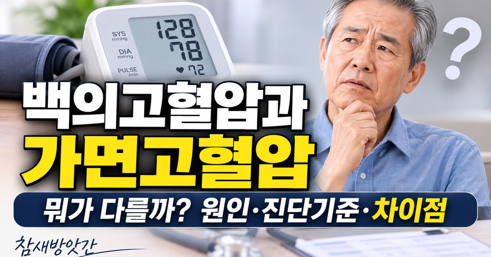

백의고혈압 원인과 진단 기준: 가면고혈압과의 결정적 차이점 정리
평소 집에서 잴 때는 정상인데, 병원 진료실이나 건강검진센터에서만 혈압이 높게 나오는 경우가 있습니다. 이를 백의고혈압이라고 부릅니다. 반대로 병원에서는 정상이지만 집에서 높게 나오는 가면고혈압도 있습니다. 이름은 비슷해도 관리 방법이 달라서 정확히 구분하는 것이 중요합니다.

이 글에서는 백의고혈압이 생기는 원인과 진단 수치 기준, 가면고혈압과의 차이, 그리고 정확한 가정혈압 측정 방법을 정리합니다.
백의고혈압의 정의와 발생 원인
진료실 혈압만 올라가는 생리적 원리
백의고혈압은 진료실이라는 낯선 환경에 대한 무의식적 긴장 반응 때문에 생깁니다. 사람은 긴장하거나 스트레스를 받으면 교감신경계가 자극되어 아드레날린과 코르티솔 같은 스트레스 호르몬이 분비됩니다.
이 호르몬은 심장 박동수를 빠르게 하고 말초 혈관을 수축시켜, 수축기 혈압과 이완기 혈압을 일시적으로 함께 올립니다. 겉으로는 차분해 보여도 자율신경계가 반응하면 병원 혈압계 수치가 평소보다 높게 기록될 수 있습니다.
백의고혈압의 진단 수치 기준
대한고혈압학회 진료지침에 따르면 백의고혈압은 진료실 혈압과 진료실 밖 혈압(가정혈압 또는 24시간 활동혈압)을 비교해 진단합니다.
| 구분 | 기준 |
|---|---|
| 진료실 혈압 | 수축기 140 이상 또는 이완기 90 이상 |
| 가정혈압 | 수축기 135 미만이고 이완기 85 미만 |
| 주간 활동혈압 | 수축기 135 미만이고 이완기 85 미만 |
진료실 혈압은 높고 가정혈압과 활동혈압은 낮은, 두 조건을 동시에 충족하면 단순 고혈압이 아닌 백의고혈압으로 분류합니다.
백의고혈압과 가면고혈압의 핵심 차이
| 구분 | 백의고혈압 | 가면고혈압 |
|---|---|---|
| 병원(진료실) 혈압 | 높게 나옴 | 정상으로 나옴 |
| 집·직장 혈압(가정혈압) | 정상 | 135/85 이상으로 높게 나옴 |
| 관리 방법 | 생활습관 교정과 추적 관찰 우선 | 생활습관 개선과 전문의 상담, 약물 치료 필요 가능 |
가면고혈압은 백의고혈압과 정반대의 양상입니다. 병원 진료실에서는 수축기 140mmHg 미만, 이완기 90mmHg 미만으로 정상 판정을 받지만, 집이나 직장에서 잰 가정혈압이 135/85mmHg 이상으로 높게 나오는 상태입니다.
직장 내 과도한 업무 스트레스, 흡연, 음주, 수면무호흡증 등이 주요 원인으로 꼽힙니다. 병원에서 안심하고 진료를 받거나 측정 직전 휴식을 취해 수치가 낮아지면서 실제 고혈압이 가려지기 때문에 '가면(Masked)'이라는 이름이 붙었습니다.
심혈관 질환 위험도와 관리 우선순위의 차이
백의고혈압과 가면고혈압은 모두 정상 혈압군에 비해 향후 지속성 고혈압으로 진행할 가능성이 높습니다. 특히 임상적으로는 가면고혈압이 백의고혈압보다 심혈관 질환 위험도가 높다고 평가받습니다.
백의고혈압은 약물 치료 없이 생활습관을 바로잡고 가정혈압을 정기적으로 추적하는 경우가 많습니다. 다만 당뇨병이나 장기 손상이 함께 있으면 약물 치료를 고려합니다. 가면고혈압은 치료 시기를 놓치기 쉬워 심근경색, 뇌졸중 같은 심혈관 합병증 위험이 지속성 고혈압과 비슷한 수준으로 나타날 수 있습니다. 그래서 생활습관 개선과 함께 전문의 상담을 통한 치료 여부 판단이 필요합니다.
정확한 구분을 위한 가정혈압 측정 방법
백의고혈압과 가면고혈압을 정확히 구분하려면 병원 밖에서 같은 방식으로 혈압을 재야 합니다. 측정 전 최소 5분 이상 의자에 등을 기대고 앉아 안정을 취하는 것이 기본입니다.
측정 시간: 아침(기상 후 1시간 이내, 소변을 본 뒤, 아침 식사 전)과 저녁(잠자리에 들기 전), 하루 2회 잽니다. 혈압약을 드시고 계시다면 복용 시간과 측정 시간은 의사와 상의해 정하세요.
측정 횟수: 매번 1~2분 간격으로 두 번씩 재고, 두 값의 평균을 기록합니다.
주의 사항: 측정 30분 전에는 카페인, 흡연, 격렬한 운동을 피합니다. 팔 커프는 심장 높이에 맞추고, 맨살이나 얇은 옷 위에 감습니다.
측정한 수축기·이완기 혈압을 혈압 계산기(bp.html)에 넣으면 현재 단계를 바로 확인할 수 있습니다.
진료실에 가져갈 혈압 기록지 작성 요령
병원 방문 전 최소 5~7일 동안 잰 가정혈압을 날짜와 시간대별로 적어 두면 진단에 큰 도움이 됩니다. 자동 혈압계의 메모리 기능을 쓰거나, 수첩이나 건강 관리 앱에 수축기 혈압, 이완기 혈압, 맥박수를 함께 정리해 담당 의사에게 보여 주세요.
자주 묻는 질문
Q1. 백의고혈압 판정을 받으면 혈압약을 바로 먹어야 하나요?
백의고혈압은 당장 약을 먹기보다 3~6개월 간격으로 가정혈압을 추적 관찰하면서, 저염식, 유산소 운동, 체중 감량 같은 생활습관 개선을 먼저 하는 것이 일반적입니다. 다만 심장 비대나 단백뇨 같은 장기 손상이 있거나 당뇨병 등 심혈관 위험인자가 함께 있다면, 전문의 판단에 따라 약물 치료를 시작할 수 있습니다.
Q2. 손목형 혈압계로 잰 수치도 백의고혈압 진단에 쓸 수 있나요?
가정혈압은 심장 높이에 맞추기 쉬운 위팔(상완) 커프형 전자혈압계로 재는 것을 권장합니다. 손목형은 손목의 위치나 각도에 따라 오차가 크게 생길 수 있어서, 위팔 커프를 착용하기 어려운 특별한 경우가 아니라면 상완식 혈압계를 쓰는 것이 정확합니다.
Q3. 가면고혈압은 어떤 사람이 특히 의심해 봐야 하나요?
건강검진에서 혈압이 정상 경계선(130~139 / 85~89mmHg)으로 나왔는데, 흡연이나 잦은 음주가 있거나 업무 스트레스가 심한 직장인이라면 가면고혈압 가능성을 생각해 볼 만합니다. 가족 중 고혈압 환자가 있거나 비만, 수면무호흡증이 있다면 집에서도 주기적으로 혈압을 확인하는 것이 좋습니다.
이 글의 혈압 기준은 2026년 11월 대한고혈압학회 진료지침을 바탕으로 합니다. 기준이 바뀌면 숫자가 달라질 수 있으니 참고용으로만 읽어 주세요. 진단과 약 복용은 의사와 상담하세요.